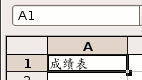
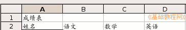
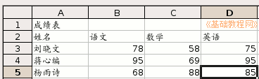

OpenOffice.org 教程之 Calc 电子表格
作者：TeliuTe 来源：基础教程网
一、创建表格 返回目录 下一课表格一般是由行和列组成的，每一行代表一条信息，可以添加许多条，下面我们来看一个练习；
1、启动Calc
1）点击点菜单“应用程序－办公－OpenOffice.org 电子表格”；
2）出现一个满是格子的空白窗口，第一个格子看着边框要粗一些，表示选中状态；
2、创建表格
1）表头：在第一个单元格中输入“成绩表”，按回车键到第二行，第一行一般是表格的名称；

2）在第二行中依次输入“姓名、语文、数学、英语”，分别从A2到D2单元格，按回车键到第三行；

3）在第三行开始输入每个人的成绩，如下图所示，按回车键向下移动，按Tab键向右移动，成绩可以用小键盘输入：

4）再在下面的状态栏上边的“工作表1”上双击一下（也可以点右键，选“重命名工作表”命令），
在出来的对话框里输入“成绩表”三个字，点确定，把表格的名称改一下；
5）点菜单“文件－保存”命令，以“成绩表”为文件名，保存文件到自己的文件夹中；
本节学习了Calc表格输入的基本操作，如果你成功地完成了练习，请继续学习下一课内容；
本教程由86团学校TeliuTe制作|著作权所有
基础教程网：http://teliute.org
美丽的校园……
转载和引用本站内容，请保留版权信息和本站链接。